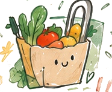
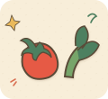
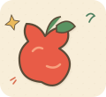
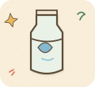
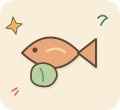
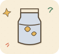
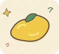
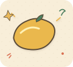

<!doctype html>
<html lang="en">
<head>
<meta charset="utf-8">
<meta name="viewport" content="width=device-width,initial-scale=1,viewport-fit=cover">
<title>FoodSafe — visual reference prototype</title>
<!-- Fonts are bundled locally for deterministic offline rendering. -->
<style>@font-face{font-family:"FoodSafe Hand";src:url("../assets/fonts/Purisa-Regular.otf") format("opentype");font-weight:400;font-style:normal;font-display:block}
@font-face{font-family:"FoodSafe Hand";src:url("../assets/fonts/Purisa-Bold.otf") format("opentype");font-weight:700;font-style:normal;font-display:block}.illustrated-art{background:transparent;object-fit:contain;image-rendering:auto}.recipe-thumb,.inventory-img,.priority-card img,.cook-photo,.hero-wrap img{background:transparent;object-fit:contain!important;padding:2px;box-sizing:border-box}.cook-photo{border-radius:15px;border:1px solid rgba(111,97,76,.4)}
</style>
<style>
:root{
 --paper:#F7EEDC; --paper-light:#FBF4E5; --paper-deep:#EDE0C9; --ink:#282E28; --ink-soft:#6B604F;
 --green:#527B5E; --green-dark:#2E6A4F; --green-soft:#DCE4C4; --green-wash:#EAF0DC;
 --peach:#F8DCC4; --orange:#E7A34D; --orange-soft:#FBE6C7; --red:#C96658; --red-soft:#F8D8CB;
 --blue:#5B8DA5; --blue-soft:#DAE9EC; --lavender:#DFDAE9; --line:#827460; --line-light:rgba(105,91,69,.34);
 --shadow:0 2px 0 rgba(88,69,43,.08), inset 0 0 0 .5px rgba(255,255,255,.6);
 --hand:'FoodSafe Hand',cursive; --body:'FoodSafe Hand',cursive;
}
*{box-sizing:border-box}
body.capture .workspace{display:block;min-height:0;padding:0;margin:0;width:390px;max-width:none}
body.capture .sidebar,body.capture .inspect{display:none}
body.capture .viewer{display:block;width:390px}
body.capture .device{width:390px;height:844px;border:0;border-radius:0;box-shadow:none}
body.capture .device:before{border-radius:0}
html,body{margin:0;min-height:100%;background:#E7DECA;color:var(--ink);font-family:var(--body);-webkit-font-smoothing:antialiased}
button,input{font:inherit;color:inherit} button{cursor:pointer}
/* FoodSafe hand-drawn control language: imperfect ink edges, never glossy or photoreal. */
button,.field,.search,.card,.chip,.pill,.toggle{ -webkit-tap-highlight-color:transparent }
button:focus-visible{outline:2px dashed #527B5E;outline-offset:2px}
.primary{border-radius:22px 19px 23px 18px / 18px 22px 17px 23px;box-shadow:0 2px 0 rgba(39,74,52,.12),inset 0 1px 0 rgba(255,255,255,.12);letter-spacing:.1px}
.secondary{border-radius:17px 20px 16px 19px / 19px 16px 21px 17px}
.chip{border-radius:19px 22px 18px 21px / 20px 17px 22px 19px;box-shadow:inset 0 1px 0 rgba(255,255,255,.45)}
.card{border-radius:14px 16px 13px 17px / 15px 13px 17px 14px}
.icon-svg{stroke-width:1.8;stroke-dasharray:none;filter:drop-shadow(.25px .25px 0 currentColor)}
.tab svg,.icon-btn svg{overflow:visible}
.category,.overview-icon,.step-icon,.setting-icon{position:relative}
.category:after,.overview-icon:after,.step-icon:after{content:"";position:absolute;inset:2px;border:1px solid rgba(96,78,54,.13);border-radius:inherit;pointer-events:none;transform:rotate(-.6deg)}

.workspace{min-height:100vh;display:grid;grid-template-columns:220px minmax(390px,1fr) 240px;gap:24px;align-items:start;justify-content:center;padding:28px 24px;max-width:1440px;margin:0 auto}
.sidebar,.inspect{background:rgba(251,244,229,.86);border:1px solid rgba(112,96,71,.28);border-radius:18px;padding:17px 14px;box-shadow:0 8px 22px rgba(73,54,28,.08);position:sticky;top:24px}
.brand-mini{font:700 24px var(--hand);color:var(--green-dark);margin-bottom:2px}.side-caption{font-size:12px;color:var(--ink-soft);margin:0 0 16px}
.screen-nav{display:flex;flex-direction:column;gap:4px}
.screen-nav button{display:flex;align-items:center;gap:10px;width:100%;padding:8px 9px;text-align:left;border:1px solid transparent;border-radius:11px;background:transparent;font-size:14px}
.screen-nav button.active{background:var(--green-soft);border-color:rgba(82,123,94,.4);color:#264F3B}
.screen-nav .num{width:23px;height:23px;border:1px solid var(--line-light);border-radius:7px;display:grid;place-items:center;font-size:11px;color:var(--ink-soft);background:rgba(255,255,255,.4);flex:none}
.viewer{display:flex;justify-content:center;min-width:0}.device{width:390px;height:844px;flex:none;border:1.5px solid #807462;border-radius:29px;overflow:hidden;background:var(--paper);box-shadow:0 18px 45px rgba(50,39,24,.20),inset 0 0 0 2px rgba(255,255,255,.5);position:relative}
.device:before{content:"";position:absolute;inset:0;pointer-events:none;z-index:10;opacity:0;background:none}
.screen{height:100%;display:flex;flex-direction:column;position:relative;background-color:var(--paper);background-image:none;}
.status{height:54px;padding:12px 17px 16px;display:flex;align-items:center;justify-content:space-between;flex:none;font:400 12px/1 var(--hand);letter-spacing:0;position:relative;z-index:1}
.status-right{display:flex;align-items:center;gap:4px;font:400 10px/1 var(--hand)}
.signal{display:inline-flex;align-items:end;gap:1px;height:9px}.signal i{display:block;width:2px;border-radius:1px;background:#292E2A}.signal i:nth-child(1){height:3px}.signal i:nth-child(2){height:5px}.signal i:nth-child(3){height:7px}.signal i:nth-child(4){height:9px}
.wifi{display:inline-flex;align-items:center;justify-content:center;width:13px;height:12px;margin-right:1px}.wifi .icon-svg{width:13px;height:13px;stroke-width:2}.battery{width:18px;height:9px;border:1.1px solid #292E2A;border-radius:2.5px;position:relative}.battery:before{content:"";position:absolute;inset:1.5px 3px 1.5px 1.5px;background:#292E2A;border-radius:1px}.battery:after{content:"";position:absolute;right:-3px;top:2px;width:2px;height:4px;background:#292E2A;border-radius:0 1px 1px 0}
.header{min-height:49px;padding:1px 17px 9px;display:flex;align-items:center;justify-content:space-between;gap:8px;flex:none;position:relative;z-index:1}
.header h1{font:400 24px/1.03 var(--hand);letter-spacing:-.35px;margin:0;text-align:center;flex:1;white-space:nowrap}
.header .header-left,.header .header-right{display:flex;align-items:center;gap:7px;min-width:28px}.header .header-right{justify-content:flex-end}.icon-btn{background:transparent;border:0;padding:3px;min-width:27px;height:30px;display:inline-flex;align-items:center;justify-content:center;font-size:21px;color:var(--ink)}
.icon-svg{width:22px;height:22px;display:block;stroke:currentColor;stroke-width:1.7;stroke-linecap:round;stroke-linejoin:round;fill:none}.logo-house{color:var(--green-dark)}
.scroll{flex:1;overflow-y:auto;overscroll-behavior:contain;padding:0 15px 15px;scrollbar-width:none;position:relative;z-index:1}.scroll::-webkit-scrollbar{display:none}
.label{font-size:14px;font-weight:700;line-height:1.25;margin:11px 0 7px}.muted{color:var(--ink-soft)}.small{font-size:12px}.micro{font-size:10.5px;line-height:1.15}.tiny{font-size:10px}.title-lg{font:400 27px/1.1 var(--hand);margin:7px 0}.subhead{font:400 18px/1.15 var(--hand);margin:8px 0}
.chips{display:flex;gap:6px;align-items:center;flex-wrap:nowrap}.chip{height:37px;padding:4px 11px;border:1px solid rgba(120,102,77,.55);border-radius:22px;background:rgba(255,255,255,.23);display:flex;align-items:center;justify-content:center;white-space:nowrap;font-size:12px;line-height:1;box-shadow:inset 0 1px 0 rgba(255,255,255,.5)}.chip.active{background:var(--green);border-color:var(--green-dark);color:#FBF5E8}.chip.soft-green{background:var(--green-soft);border-color:#B8C7A5;color:#345E43}
.search{height:42px;border:1px solid rgba(112,96,73,.43);border-radius:22px;padding:0 12px;display:flex;align-items:center;gap:8px;background:rgba(255,250,239,.38);font-size:12px;color:var(--ink-soft)}.search svg{width:16px;height:16px}
.card{border:1px solid rgba(111,97,76,.54);border-radius:15px;background:rgba(255,250,239,.36);box-shadow:var(--shadow);position:relative}
.card:after{content:"";position:absolute;inset:1.5px;border:1px solid rgba(150,124,87,.09);border-radius:12px;pointer-events:none}
.pill{display:inline-flex;align-items:center;gap:5px;padding:4px 9px;border-radius:14px;font-size:11px;line-height:1;white-space:nowrap;border:1px solid rgba(90,104,67,.25);background:var(--green-soft);color:#31583E}
.pill .icon-svg,.stats-line .icon-svg,.swap-tagline .icon-svg,.scaled-note .icon-svg,.step-icon .icon-svg,.primary .icon-svg{width:14px;height:14px;flex:none;stroke-width:1.8}.field .icon-svg{width:17px;height:17px;flex:none}.zone-option .icon-svg{width:18px;height:18px;flex:none}.pill.orange{background:#F9E6BA;color:#8E6120;border-color:rgba(172,122,42,.22)}.pill.red{background:var(--red-soft);color:#AE4D43;border-color:rgba(174,77,67,.25)}.pill.blue{background:var(--blue-soft);color:#356C7B}.pill.peach{background:#F7DCC2;color:#8F6132}.pill.white{background:rgba(255,250,239,.65)}
.primary{border:1px solid rgba(35,89,62,.72);background:var(--green);color:#FBF6E9;min-height:44px;padding:9px 17px;border-radius:22px;box-shadow:0 2px 0 rgba(39,74,52,.12),inset 0 1px 0 rgba(255,255,255,.1);font-size:15px;font-weight:700;line-height:1.1;display:flex;align-items:center;justify-content:center;gap:9px;width:100%}.primary:active{transform:translateY(1px)}
.secondary{border:1px solid rgba(111,97,76,.55);background:rgba(255,250,239,.3);min-height:42px;padding:8px 13px;border-radius:22px;font-size:14px}
.text-link{border:0;background:transparent;text-decoration:underline;text-underline-offset:2px;padding:4px;color:var(--ink-soft);font-size:12px}
.bottom-nav{height:88px;flex:none;background:rgba(248,239,222,.97);border-top:1px solid rgba(117,99,75,.26);display:flex;align-items:center;justify-content:space-around;padding:5px 9px 27px;position:relative;z-index:2;align-items:flex-start}
.tab{width:58px;min-height:42px;display:flex;flex-direction:column;align-items:center;justify-content:center;gap:1px;border:0;background:transparent;color:var(--ink-soft);font-size:10px;line-height:1.1;padding:2px 0}.tab svg{width:20px;height:20px}.tab.active{color:var(--green-dark);font-weight:700}.tab.active svg{stroke-width:2.2}.tab.plus{width:42px;height:42px;border-radius:50%;background:var(--green);color:white;box-shadow:0 2px 0 rgba(36,82,54,.16);margin-top:-9px}.tab.plus svg{width:23px;height:23px}
.bottom-space{height:8px;flex:none}
/* Deterministic hand-composed tilt map: subtle and repeatable, not random. */
.header h1{transform:rotate(-.55deg);transform-origin:center 60%}
.chip:nth-child(2n){transform:rotate(-.45deg)} .chip:nth-child(3n){transform:rotate(.35deg)}
.primary{transform:rotate(-.35deg)} .card:nth-of-type(odd){transform:rotate(-.18deg)}
.category:nth-child(1){transform:rotate(-1deg)} .category:nth-child(2){transform:rotate(.7deg)} .category:nth-child(3){transform:rotate(-.55deg)} .category:nth-child(4){transform:rotate(.85deg)} .category:nth-child(5){transform:rotate(.45deg)} .category:nth-child(6){transform:rotate(-.75deg)} .category:nth-child(7){transform:rotate(.55deg)}
.overview-row:nth-of-type(odd){transform:rotate(-.28deg)} .overview-row:nth-of-type(even){transform:rotate(.22deg)}
.product-image,.recipe-thumb,.inventory-img{transform:rotate(-.8deg)}
/* Welcome */
.welcome{height:100%;padding:44px 24px 23px;display:flex;flex-direction:column;align-items:center;position:relative;overflow:hidden;text-align:center;background-color:var(--paper);background-image:none;}
.welcome:before{content:none}
.logo{display:block;width:264px;height:106px;object-fit:contain;transform:rotate(-2.8deg);margin-top:20px;margin-bottom:0;position:relative;z-index:1;filter:drop-shadow(.25px .25px 0 rgba(39,92,63,.18))}
.tagline{font:400 22px/1.1 var(--hand);color:#315C43;margin-top:0;transform:rotate(-2deg);position:relative;z-index:1}.welcome-art{width:280px;height:274px;object-fit:contain;margin:10px auto 5px;position:relative;z-index:1}.welcome-copy{font:400 20px/1.3 var(--hand);margin:5px 0 14px;transform:rotate(-2deg);color:#514B3E}.welcome .primary{max-width:285px;min-height:53px;font-size:17px;transform:rotate(-1deg)}.welcome .text-link{margin-top:8px;color:#4F6B53;font-size:14px}.doodle{position:absolute;color:#DCA84D;font-size:24px;opacity:.85}.doodle.a{top:54px;left:27px;font-size:36px}.doodle.b{top:188px;left:33px}.doodle.c{right:35px;top:260px;color:var(--green)}.doodle.d{right:25px;bottom:150px;color:var(--red);transform:rotate(25deg)}
/* Home */
.zone-row{margin:10px 0 13px}.zone-row .chip{flex:1}
.category-grid{display:grid;grid-template-columns:repeat(4,1fr);gap:9px 8px;margin:12px 0 18px}
.category{height:76px;border:1px solid rgba(115,96,68,.24);border-radius:16px;background:#DCE4C4;display:flex;flex-direction:column;align-items:center;justify-content:center;gap:3px;font-size:12px;box-shadow:inset 0 1px 1px rgba(255,255,255,.65);padding:4px 1px}
.category:nth-child(2),.category:nth-child(4){background:#F8E4B8}.category:nth-child(3){background:#D9E8E8}.category:nth-child(5){background:#F7DCC5}.category:nth-child(6){background:#DFE5F0}.category:nth-child(7){background:#DCD9EA}
.category .emoji{width:34px;height:34px;display:flex;align-items:center;justify-content:center;font-size:26px;line-height:1.05;filter:saturate(.85)}.category .emoji img{width:100%;height:100%;object-fit:contain;display:block}.category span:last-child{font-size:11px}
.section-row{display:flex;justify-content:space-between;align-items:center;margin:11px 2px 10px}.section-row .label{margin:0;font-size:18px}
.attention{display:flex;align-items:center;gap:8px;min-height:43px;background:#F8DCC4;border:1px solid rgba(196,123,76,.34);border-radius:12px;padding:7px 10px;margin-bottom:7px;color:#B45E4B;font-size:13px}
.overview-row{min-height:68px;display:flex;align-items:center;gap:10px;padding:7px 10px;margin-top:5px}.overview-icon{height:44px;width:44px;display:grid;place-items:center;border-radius:11px;background:#F8E3BA;font-size:23px;flex:none}.overview-row .copy{flex:1;line-height:1.05}.overview-row strong{display:block;font-size:13px}.overview-row small{display:block;font-size:11px;color:var(--ink-soft);margin-top:3px}.chev{display:inline-flex;align-items:center;justify-content:center;color:var(--ink-soft);line-height:1;flex:none}.chev .icon-svg{width:15px;height:15px;stroke-width:1.8}
/* Add ingredient */
.product-row{display:flex;align-items:center;gap:12px;margin:6px 2px 11px}.product-image{width:112px;height:104px;border:1px solid rgba(111,97,76,.52);border-radius:15px;padding:3px;object-fit:contain;background:var(--paper-light);box-shadow:var(--shadow)}.product-meta{flex:1;min-width:0}.product-meta h2{font:400 24px/1.05 var(--hand);margin:0 0 9px}.field-label{font-size:14px;font-weight:700;margin:17px 0 7px}.field-row{display:flex;gap:8px;align-items:center}.field{height:44px;border:1px solid rgba(111,97,76,.55);border-radius:14px;background:rgba(255,250,239,.42);padding:6px 11px;display:flex;align-items:center;justify-content:space-between;font-size:14px;box-shadow:inset 0 1px 0 rgba(255,255,255,.42)}.field.flex{flex:1}.field.units{width:100px}.zone-option{display:flex;flex:1;align-items:center;justify-content:center;gap:4px;height:44px;border:1px solid rgba(111,97,76,.28);border-radius:13px;background:rgba(255,250,239,.22);font-size:12px;white-space:nowrap}.zone-option.selected{background:var(--green);color:white;border-color:var(--green-dark)}.zone-option .emoji{font-size:15px}.notes{height:88px;align-items:flex-start;color:#988B76;padding-top:9px}.bottom-action{padding:7px 16px 28px;flex:none;position:relative;z-index:1;background:linear-gradient(180deg,rgba(247,238,220,0),var(--paper) 18%)}
/* Inventory */
.filter-row{margin:10px 0 12px;gap:5px}.filter-row .chip{flex:1;padding-inline:8px}.inventory-list{display:flex;flex-direction:column;gap:7px}.inventory-card{display:flex;align-items:center;gap:9px;padding:8px 9px;min-height:70px}.inventory-img{width:54px;height:53px;object-fit:contain;border-radius:11px;border:1px solid rgba(116,96,70,.2);background:#F4E6C8;flex:none}.inventory-main{flex:1;min-width:0}.inventory-main strong{font-size:14px;display:block;line-height:1.05}.inventory-main .meta{font-size:11px;color:var(--ink-soft);margin-top:2px;white-space:nowrap}.inventory-main .expiry{font-size:11px;color:var(--red);margin-top:1px;white-space:nowrap}.inventory-end{display:flex;flex-direction:column;align-items:flex-end;gap:2px}.inventory-end .pill{font-size:10px;padding:4px 7px}
/* Recipe cards */
.recipe-filter .chip{flex:1;padding:4px 7px}.based-row{display:flex;align-items:center;justify-content:space-between;gap:8px;margin:14px 1px 8px;font-size:12px}.sort{border:1px solid rgba(111,97,76,.26);border-radius:14px;padding:4px 7px;background:rgba(255,250,239,.25);font-size:10px;white-space:nowrap}
.recipe-list{display:flex;flex-direction:column;gap:8px}.recipe-card{display:flex;gap:9px;padding:8px;min-height:119px;align-items:center}.recipe-thumb{width:78px;height:78px;border-radius:12px;object-fit:contain;border:1px solid rgba(111,97,76,.3);background:#E9D9B7;flex:none}.recipe-info{min-width:0;flex:1}.recipe-info .pill{margin-bottom:4px}.recipe-info strong{display:block;font-size:14px;line-height:1.1;margin-bottom:4px}.recipe-stats{display:flex;align-items:center;gap:7px;font-size:11px;color:var(--ink-soft);flex-wrap:wrap}.recipe-note{font-size:10.5px;margin-top:3px;line-height:1.1}.recipe-note.red{color:var(--red)}.recipe-note.green{color:var(--green-dark)}.full-width{margin-top:10px}
/* Details */
.hero-wrap{height:132px;position:relative;margin:0 -15px 7px;overflow:hidden;background:#EBD9B8}
.hero-wrap img{width:100%;height:100%;object-fit:contain;display:block;filter:none;padding:3px;box-sizing:border-box}.hero-control{position:absolute;top:10px;width:36px;height:36px;border:1px solid rgba(105,87,58,.32);border-radius:50%;display:grid;place-items:center;background:rgba(255,247,228,.9);font-size:21px;box-shadow:0 1px 3px rgba(63,45,22,.12)}.hero-control.left{left:12px}.hero-control.right{right:12px}.detail-title{font:400 28px/1.05 var(--hand);margin:8px 0 6px}.stats-line{display:flex;align-items:center;gap:13px;font-size:12px;flex-wrap:wrap;margin:7px 0 11px}.stats-line span{display:inline-flex;align-items:center;gap:4px}.ingredients-heading{display:flex;justify-content:space-between;align-items:center;margin:11px 0 4px}.ingredients-heading .subhead{margin:0}.ingredients-heading .add-ingredient-icon .icon-svg{width:16px;height:16px}.lentil-meta .icon-svg{width:13px;height:13px;vertical-align:middle;display:inline-block}.ingredient-line{display:flex;align-items:center;gap:9px;height:40px;border-bottom:1px solid rgba(111,97,76,.15);font-size:13px;padding:2px 3px}.ingredient-icon{width:25px;height:26px;display:grid;place-items:center;font-size:19px;flex:none}.ingredient-icon img{width:24px;height:24px;object-fit:contain;display:block}.ingredient-line .name{flex:1}.ingredient-line .qty{font-size:12px;color:#5E5649}
/* Cooking */
.step-summary{min-height:60px;padding:5px 8px;display:flex;align-items:center;gap:8px;margin-bottom:6px}.step-icon{height:40px;width:40px;background:#F8E1B5;border-radius:10px;display:grid;place-items:center;font-size:22px}.step-summary .text{flex:1}.step-summary strong{display:block;font-size:14px;line-height:1.05}.step-summary small{display:block;font-size:11px;color:var(--ink-soft);margin-top:2px}.cook-photo{width:100%;height:156px;object-fit:contain;border-radius:12px;border:1px solid rgba(111,97,76,.42);display:block;margin:4px 0 8px;filter:none;background:transparent}.step-title{font:400 20px/1.1 var(--hand);margin:5px 0}.step-instruction{font-size:14px;line-height:1.35;margin:4px 2px 12px}.progress-track{height:7px;border-radius:8px;background:#DCD6C8;border:1px solid rgba(111,97,76,.14);overflow:hidden;flex:1}.progress-fill{width:28.5%;height:100%;background:var(--green);border-radius:8px}.progress-row{display:flex;align-items:center;gap:9px;font-size:11px;color:var(--ink-soft);margin-bottom:8px}.scaled-note{display:flex;align-items:center;gap:6px;background:#E7EED7;border:1px solid rgba(82,123,94,.23);border-radius:12px;padding:7px 9px;font-size:12px;margin-bottom:9px}.action-pair{display:flex;gap:8px}.action-pair>*{flex:1}
/* Portion scaling */
.mini-recipe{display:flex;align-items:center;gap:10px;padding:4px 1px 10px}.mini-recipe img{width:43px;height:43px;object-fit:contain;border-radius:11px;border:1px solid rgba(111,97,76,.25)}.mini-recipe strong{font-size:14px}.servings{display:flex;gap:6px}.serving{height:45px;flex:1;border:1px solid rgba(111,97,76,.5);border-radius:12px;background:rgba(255,250,239,.3);font-size:16px}.serving.active{background:var(--green);border-color:var(--green-dark);color:white}.qty-list{margin-top:6px}.qty-row{height:39px;display:flex;align-items:center;gap:9px;border-bottom:1px solid rgba(111,97,76,.15);padding:3px 4px;font-size:13px}.qty-row .qty-icon{font-size:19px;width:24px;text-align:center}.qty-row .qty-name{flex:1}.qty-row .qty-number{font-size:12px}
/* swaps */
.swap-source{padding:12px;display:flex;align-items:center;gap:10px;margin:12px 0}.swap-source .large-emoji{font-size:34px}.swap-art{width:48px;height:48px;object-fit:contain;flex:none}.swap-choice .fruit img{width:34px;height:34px;object-fit:contain;display:block}.swap-source strong{font-size:15px;display:block}.swap-source span{font-size:12px;color:var(--ink-soft)}.swap-choices{display:flex;flex-direction:column;gap:7px}.swap-choice{min-height:68px;display:flex;align-items:center;gap:10px;padding:7px 11px}.swap-choice .fruit{font-size:27px;width:35px;text-align:center}.swap-choice .choice-name{flex:1;font-size:15px}.swap-choice .radio{height:18px;width:18px;border:1.4px solid rgba(111,97,76,.7);border-radius:50%;display:grid;place-items:center}.swap-choice.selected{background:rgba(220,228,196,.65);border-color:rgba(82,123,94,.55)}.swap-choice.selected .radio{border-color:var(--green);background:var(--green)}.swap-choice.selected .radio:after{content:"✓";font:700 12px/1 var(--hand);color:white}.why{margin-top:14px}.why strong{font-size:15px}.why p{margin:5px 0 2px;font-size:12px;line-height:1.3}.swap-foot{margin-top:auto}
/* meals */
.tabchips{display:flex;gap:5px;margin:5px 0 12px}.tabchips .chip{padding:4px 7px;flex:1;font-size:11px}.meal-list{display:flex;flex-direction:column;gap:7px}.meal-card{min-height:125px;display:flex;gap:9px;padding:7px;align-items:center}.meal-card .recipe-thumb{width:88px;height:88px}.meal-card .recipe-info strong{font-size:14px}.meal-card .recipe-info .pill{font-size:10px;padding:4px 7px}
/* lentil recipe steps */
.swap-tagline{display:flex;align-items:center;gap:7px;margin:5px 0 9px;font-size:12px}.segmented{display:flex;gap:0;height:39px;border:1px solid rgba(111,97,76,.35);border-radius:13px;overflow:hidden;margin:7px 0 6px}.segmented button{flex:1;border:0;background:rgba(255,250,239,.3);font-size:13px}.segmented button.active{background:#DCE4C4;color:#2B5D40;border-left:1px solid rgba(111,97,76,.2);font-weight:700}.steps-list{display:flex;flex-direction:column}.cooking-step{display:flex;align-items:flex-start;gap:9px;padding:8px 2px;border-bottom:1px solid rgba(111,97,76,.15);min-height:54px}.step-number{width:24px;height:24px;border-radius:50%;display:grid;place-items:center;background:var(--green);color:#fff8e9;font-size:12px;flex:none}.cooking-step strong{font-size:13px;line-height:1.1;display:block}.cooking-step small{font-size:11px;display:block;color:var(--ink-soft);margin-top:2px}
/* expiration */
.priority-alert{display:flex;align-items:center;gap:7px;background:#F7D8CC;border:1px solid rgba(192,91,78,.35);border-radius:13px;padding:9px 10px;color:#B65348;font-size:13px;line-height:1.15;margin:5px 0 9px}.priority-card{display:flex;align-items:center;gap:8px;padding:8px 9px;min-height:70px;margin-bottom:7px}.priority-card img{width:52px;height:50px;object-fit:contain;border-radius:10px;background:#F7E5C9}.priority-main{flex:1}.priority-main strong{display:block;font-size:14px;line-height:1.05}.priority-main small{display:block;color:var(--red);font-size:11px;margin-top:3px}.check{width:17px;height:17px;border:1px solid rgba(111,97,76,.5);border-radius:4px;display:grid;place-items:center;background:rgba(255,250,239,.25)}.check.checked{background:var(--green);color:white;border-color:var(--green)}.tips{padding:11px;margin-top:12px;background:#FBE5C3;border-color:rgba(192,143,75,.43)}.tips-head{display:flex;align-items:center;gap:7px;font-size:15px;font-weight:700}.tips p{font-size:12px;line-height:1.3;margin:6px 3px 1px}
/* settings */
.settings-list{display:flex;flex-direction:column;gap:9px;margin-top:14px}.settings-row{display:flex;align-items:center;gap:10px;padding:11px 10px;min-height:68px}.setting-icon{width:30px;height:30px;display:grid;place-items:center;flex:none;color:var(--ink-soft)}.setting-icon svg{width:23px;height:23px}.setting-copy{flex:1}.setting-copy strong{font-size:14px;line-height:1.1;display:block}.setting-copy small{font-size:11px;color:var(--ink-soft);display:block;margin-top:3px}.toggle{width:43px;height:25px;border:1px solid rgba(78,103,72,.4);border-radius:15px;background:#E3E3C6;padding:2px;display:flex;align-items:center;justify-content:flex-start}.toggle:after{content:"";width:19px;height:19px;border-radius:50%;background:#FBF5E6;border:1px solid rgba(103,87,57,.2);box-shadow:0 1px 2px #a59a84}.toggle.on{background:#6EA17A;justify-content:flex-end}
/* visual audit notes */
.inspect h2{font:700 18px var(--hand);margin:0 0 6px}.inspect p{font-size:12px;line-height:1.38;color:var(--ink-soft);margin:0 0 12px}.inspect .audit-row{padding:8px 0;border-top:1px solid rgba(111,97,76,.2);font-size:12px;line-height:1.25}.audit-row strong{display:block;color:var(--ink);margin-bottom:2px}.keyboard-hint{font-size:11px;color:var(--ink-soft);margin-top:12px}
@media(max-width:950px){.workspace{grid-template-columns:minmax(0,1fr);padding:10px;gap:12px}.sidebar,.inspect{position:relative;top:auto}.sidebar{order:2}.viewer{order:1}.inspect{order:3}.screen-nav{display:grid;grid-template-columns:repeat(2,1fr)}.device{width:min(390px,100vw - 24px);height:min(844px,calc(100dvh - 18px));min-height:650px}.workspace{justify-items:center}.sidebar,.inspect{width:min(390px,100%)} }
@media(max-width:430px){.workspace{padding:0;gap:0}.sidebar,.inspect{display:none}.viewer{width:100%}.device{width:100vw;height:100dvh;min-height:600px;border:0;border-radius:0;box-shadow:none}.device:before{opacity:.12}.status{padding-top:calc(env(safe-area-inset-top, 0px) + 9px)}}
</style>
<style id="foodsafe-single-handwritten-type">
/* One letterform family everywhere in the authored UI, including tiny metadata, inputs, tabs,
   chips, buttons, generated checkmarks, prototype status text, and preview chrome. */
:root{--hand:"FoodSafe Hand",cursive;--body:"FoodSafe Hand",cursive}
html,body,body *,body *::before,body *::after{
  font-family:"FoodSafe Hand",cursive !important;
  font-synthesis:none !important;
}
html,body{font-family:var(--body) !important}
button,input,textarea,select,option{font-family:var(--hand) !important;font-synthesis:none !important}
/* Purisa Regular is intentionally the default ink weight; selected emphasis uses the matching Purisa Bold face. */
body .status,body .status-right{font-family:var(--hand)!important;font-weight:400;letter-spacing:0}
/* Very slight pen density compensation at small raster sizes; never faux-bold the whole page. */
body .screen{ -webkit-font-smoothing:antialiased; text-rendering:geometricPrecision }
</style>

<style id="foodsafes-asset-integration-styles">
/* Local offline asset audition. Deliberately static and deterministic: no CDN or live font dependency. */
.asset-test-panel{margin:13px 0 12px;padding:11px 10px 10px;border:1px solid rgba(111,97,76,.38);border-radius:14px 12px 15px 13px;background:rgba(255,250,239,.66);box-shadow:0 1px 0 rgba(88,69,43,.08);transform:rotate(-.18deg)}
.asset-test-title{display:block;font-size:14px;margin-bottom:9px;color:#315C43}
.asset-test-option{display:flex;align-items:flex-start;gap:7px;font-size:12px;line-height:1.25;margin:7px 0;cursor:pointer}
.asset-test-option input{appearance:none;-webkit-appearance:none;width:16px;height:16px;min-width:16px;border:1px solid #756850;border-radius:4px;background:#FBF4E5;position:relative;margin:0;transform:rotate(-2deg)}
.asset-test-option input:checked{background:#527B5E;border-color:#2E6A4F}
.asset-test-option input:checked:after{content:"";position:absolute;left:4px;top:1px;width:4px;height:8px;border:solid #FBF4E5;border-width:0 1.8px 1.8px 0;transform:rotate(45deg)}
.asset-test-note{font-size:10.5px!important;line-height:1.3!important;color:#756A59;margin:8px 0 7px!important}
.asset-test-status{font-size:10.5px;color:#315C43;padding-top:7px;border-top:1px solid rgba(111,97,76,.2)}
/* Static hand-sketched control outlines adapt the Drawably concept, but keep semantic HTML controls intact. */
.sketch-control{position:relative!important;isolation:isolate}
.sketch-control > .foodsafe-sketch-outline{position:absolute!important;inset:0!important;width:100%!important;height:100%!important;overflow:visible!important;pointer-events:none!important;z-index:4!important;display:block!important}
.sketch-control > .foodsafe-sketch-outline path{fill:none;stroke-linecap:round;stroke-linejoin:round;vector-effect:non-scaling-stroke}
body[data-controls-sketch="on"] #screen .sketch-control{border-color:transparent!important}
body[data-controls-sketch="on"] #screen .card.sketch-control:after{display:none!important}
body[data-controls-sketch="on"] #screen .segmented.sketch-control{border-color:transparent!important}
body[data-controls-sketch="off"] #screen .foodsafe-sketch-outline{display:none!important}
/* Icon path displacement is intentionally tiny and static; no animated boiling in the screenshot reference. */
body[data-doodle-icons="on"] #screen .icon-svg{filter:url(#foodsafeDoodleInk) drop-shadow(.2px .25px 0 currentColor)!important;stroke-width:1.8}
body[data-doodle-icons="on"] #screen .tab.active .icon-svg{stroke-width:2}
body[data-doodle-icons="off"] #screen .icon-svg{filter:none!important}
/* Keep sketch overlays away from screenshots and click targets; no pseudo-control intercepts pointer input. */
@media(prefers-reduced-motion:reduce){.sketch-control,.icon-svg{animation:none!important;transition:none!important}}
</style>

</head>
<body data-controls-sketch="on" data-doodle-icons="on">
<svg class="svg-definitions" xmlns="http://www.w3.org/2000/svg" aria-hidden="true" focusable="false" width="0" height="0" style="position:absolute;overflow:hidden">
 <defs>
  <filter id="foodsafeDoodleInk" x="-12%" y="-12%" width="124%" height="124%" color-interpolation-filters="sRGB">
   <feTurbulence type="fractalNoise" baseFrequency="0.045" numOctaves="1" seed="11" result="grain"/>
   <feDisplacementMap in="SourceGraphic" in2="grain" scale="0.85" xChannelSelector="R" yChannelSelector="G"/>
  </filter>
 </defs>
</svg>
<div class="workspace">
 <aside class="sidebar">
  <div class="brand-mini">FoodSafe ✦</div><p class="side-caption">Visual reference · 13 screens</p>
  <nav class="screen-nav" id="screenNav"></nav>
  <p class="keyboard-hint">Use the menu to switch screens. Buttons inside the preview navigate between related screens.</p>
 </aside>
 <main class="viewer"><div class="device" id="device"><div class="screen" id="screen"></div></div></main>
 <aside class="inspect">
  <h2>Visual QA notes</h2><p>This is a renderable UI reference, not the finished native app. Every app-authored text role is set in the same locally bundled hand-printed face; the wordmark remains source-derived brand artwork.</p>
  <section class="asset-test-panel" aria-label="Asset integration test controls">
   <strong class="asset-test-title">Asset integration · test switches</strong>
   <label class="asset-test-option"><input type="checkbox" id="toggleSketchControls" checked> <span>Drawably-style static control sketch</span></label>
   <label class="asset-test-option"><input type="checkbox" id="toggleDoodleIcons" checked> <span>Doodle-style ink on SVG icons</span></label>
   <p class="asset-test-note">FoodSafe's bundled food illustrations stay in place. Sketch controls and icon ink are local offline prototypes of the researched styles; the upstream packages could not be fetched into this runtime, so they are not misrepresented as vendored source.</p>
   <div id="assetTestStatus" class="asset-test-status" role="status">Sketch controls ON · icon ink ON</div>
  </section>
  <div class="audit-row"><strong>Paper</strong>Flat warm-cream surface. Crease texture intentionally removed per review.</div>
  <div class="audit-row"><strong>Ink & outlines</strong>Soft charcoal-brown strokes; hand-drawn softness without making controls illegible.</div>
  <div class="audit-row"><strong>Primary action</strong>Forest-green pill, cream lettering, narrow dark-green edge.</div>
  <div class="audit-row"><strong>Image fidelity</strong>Recipe crops are source-derived where possible; low-resolution crops are a known limit.</div>
  <div class="audit-row"><strong>Next native pass</strong>Replace HTML flow with SwiftUI, bundle the selected fonts, redraw illustration assets as vector paths, then validate on-device screenshots.</div>
 </aside>
</div>
<script>
const icons={
 home:'<svg class="icon-svg" viewBox="0 0 24 24"><path d="M3 10.5 12 3l9 7.5M5.5 9.4V21h13V9.4M9.4 21v-7h5.2v7"/></svg>',
 inventory:'<svg class="icon-svg" viewBox="0 0 24 24"><path d="M7 4.5h10v16H7zM9 2.5h6v2H9zM10 9h4M10 12h4M10 15h4"/></svg>',
 recipes:'<svg class="icon-svg" viewBox="0 0 24 24"><path d="M6 3.5h10l3 3V21H6zM16 3.5v4h3M9 11h7M9 14h7M9 17h5"/></svg>',
 more:'<svg class="icon-svg" viewBox="0 0 24 24"><circle cx="5" cy="12" r="1"/><circle cx="12" cy="12" r="1"/><circle cx="19" cy="12" r="1"/></svg>',
 plus:'<svg class="icon-svg" viewBox="0 0 24 24"><path d="M12 5v14M5 12h14"/></svg>',
 back:'<svg class="icon-svg" viewBox="0 0 24 24"><path d="M19 12H5M12 5l-7 7 7 7"/></svg>',
 search:'<svg class="icon-svg" viewBox="0 0 24 24"><circle cx="10.8" cy="10.8" r="6.4"/><path d="m16 16 4.2 4.2"/></svg>',
 heart:'<svg class="icon-svg" viewBox="0 0 24 24"><path d="M20.4 8.7c0 5.1-8.4 11-8.4 11s-8.4-5.9-8.4-11A4.4 4.4 0 0 1 12 6.2a4.4 4.4 0 0 1 8.4 2.5Z"/></svg>',
 chevron:'<svg class="icon-svg" viewBox="0 0 24 24"><path d="m9 5 7 7-7 7"/></svg>',
 calendar:'<svg class="icon-svg" viewBox="0 0 24 24"><rect x="3.5" y="5" width="17" height="15.5" rx="2.3"/><path d="M7.5 3v4M16.5 3v4M4 9.5h16M8 13h2M13 13h2M8 16h2"/></svg>',
 leaf:'<svg class="icon-svg" viewBox="0 0 24 24"><path d="M20.5 3.5C11 3.6 4 6.3 4 13.2c0 3 2.3 5 5 4.5 5.9-1 9.1-6.9 11.5-14.2Z"/><path d="M3.5 21c3.2-5 6.7-8.1 12.8-11.3"/></svg>',
 clock:'<svg class="icon-svg" viewBox="0 0 24 24"><circle cx="12" cy="12" r="8.7"/><path d="M12 6.8v5.5l3.7 2.2"/></svg>',
 gear:'<svg class="icon-svg" viewBox="0 0 24 24"><circle cx="12" cy="12" r="3.2"/><path d="m19.2 13.8 1.2 1.9-2 3.4-2.2-.3-1.1 1.8H9l-1.1-1.8-2.2.3-2-3.4 1.2-1.9v-3.6l-1.2-1.9 2-3.4 2.2.3L9 3.4h6.1l1.1 1.8 2.2-.3 2 3.4-1.2 1.9z" transform="translate(0 0) scale(.9) translate(1.3 1.3)"/></svg>',
 warning:'<svg class="icon-svg" viewBox="0 0 24 24"><path d="M12 3 22 20H2Z"/><path d="M12 9v5M12 17.2v.2"/></svg>',
 check:'<svg class="icon-svg" viewBox="0 0 24 24"><path d="m5 12.5 4.3 4.2L19 7"/></svg>',
 pantry:'<svg class="icon-svg" viewBox="0 0 24 24"><path d="M4 4.2 20 3.7 20.3 20.2 3.8 20Z"/><path d="M4 9.5 20 9.1M8.2 6.5h.1M15.8 6.2h.1M8 12.3v4.8M16 12.3v4.8"/><path d="M6.2 12.6h3.5M14.2 12.6h3.5"/></svg>',
 fridge:'<svg class="icon-svg" viewBox="0 0 24 24"><path d="M6.2 3.4 17.8 3.1 18.2 20.7 5.9 20.9Z"/><path d="M6.1 10.4 18 10M9 6.2v2.2M9.1 13v3.1M15 13v4.2"/><path d="M4.7 21.5h14.6"/></svg>',
 freezer:'<svg class="icon-svg" viewBox="0 0 24 24"><path d="M12 2.8v18.4M4 7.4l16 9.2M4.1 16.6l15.8-9.2"/><path d="m9 5.7 3 2.1 3-2.1M9 18.4l3-2.1 3 2.1M4.2 10.8l3.2-.2.1-3.1M16.5 16.5l.1-3.2 3.2-.2M7.4 17.4l.1-3.2-3.2-.2M16.6 7.2l-.1 3.2 3.2.2"/></svg>',
 chefHat:'<svg class="icon-svg" viewBox="0 0 24 24"><path d="M5 13.1a4.2 4.2 0 0 1 .8-8.2A6.1 6.1 0 0 1 17.4 5a4.1 4.1 0 0 1 1.7 8.1v4.3L5 17.8Z"/><path d="M5.2 14.1 19 14M7 18v2.2l10 .2v-2.4M9 8.3v2.2M14.8 7.7v2.6"/></svg>',
 pot:'<svg class="icon-svg" viewBox="0 0 24 24"><path d="M4.2 9h15.6l-1 10.1-13.7.2Z"/><path d="M2.5 10.4h2M19.4 10.4h2.1M8.5 6.6h7M7 5l10-.1M9 3.2h6"/><path d="M8 12.5v3.1M12 12.5v3.1M16 12.5v3.1"/></svg>',
 wifi:'<svg class="icon-svg" viewBox="0 0 24 24"><path d="M3.4 8.8a13.8 13.8 0 0 1 17.2-.1M6.7 12.1a8.7 8.7 0 0 1 10.6 0M10 15.4a3.8 3.8 0 0 1 4 0"/><path d="M12 19h.1"/></svg>',
 arrowRight:'<svg class="icon-svg" viewBox="0 0 24 24"><path d="M4 12.2 19.5 12M13.2 5.8l6.3 6.2-6.4 6.3"/></svg>',
 down:'<svg class="icon-svg" viewBox="0 0 24 24"><path d="m5.5 9 6.5 6.3L18.5 9"/></svg>'
};
const image=(name,cls='')=>``;
const status=()=>`<div class="status"><span>9:41</span><span class="status-right"><span class="signal"><i></i><i></i><i></i><i></i></span><span class="wifi">${icons.wifi}</span><span class="battery"></span></span></div>`;
const header=(title,back=true,right='')=>`<header class="header"><div class="header-left">${back?`<button class="icon-btn" data-go="back" aria-label="Back">${icons.back}</button>`:''}</div><h1>${title}</h1><div class="header-right">${right}</div></header>`;
const tabbar=(active)=>`<nav class="bottom-nav"><button class="tab ${active==='home'?'active':''}" data-go="home">${icons.home}<span>Home</span></button><button class="tab ${active==='inventory'?'active':''}" data-go="inventory">${icons.inventory}<span>Inventory</span></button><button class="tab plus" data-go="add">${icons.plus}</button><button class="tab ${active==='recipes'?'active':''}" data-go="suggestions">${icons.recipes}<span>Recipes</span></button><button class="tab ${active==='more'?'active':''}" data-go="settings">${icons.more}<span>More</span></button></nav>`;
const field=(text,extra='')=>`<div class="field ${extra}">${text}</div>`;
const ingredientImage={'Pasta':'pasta-icon','Tomatoes':'tomato-icon','Olive oil':'olive-oil-icon','Garlic':'garlic-icon','Basil':'basil-icon','Salt':'salt-icon','Pepper':'pepper-icon','Eggs':'eggs-inventory','Spinach':'spinach-inventory','Chicken':'chicken-inventory','Ground Beef':'beef-priority','Mozzarella Cheese':'mozzarella-priority','Lentils':'lentil-thumb','Carrot':'carrot-ingredient','Onion':'onion-ingredient','Celery':'celery-ingredient'};
const itemLine=(emoji,name,qty)=>`<div class="ingredient-line"><span class="ingredient-icon">${ingredientImage[name]?image(ingredientImage[name],'ingredient-art'):image('tomato-icon','ingredient-art')}</span><span class="name">${name}</span><span class="qty">${qty}</span></div>`;

// Local, offline static sketch renderer. This is a lightweight style audition inspired by
// Drawably's documented static/seeded approach, not copied or vendored Drawably source.
function foodsafeHash(value){let h=2166136261;for(let i=0;i<value.length;i++){h^=value.charCodeAt(i);h=Math.imul(h,16777619)}return h>>>0}
function foodsafeRng(seed){let a=seed>>>0;return()=>{a+=0x6D2B79F5;let t=a;t=Math.imul(t^(t>>>15),t|1);t^=t+Math.imul(t^(t>>>7),t|61);return((t^(t>>>14))>>>0)/4294967296}}
function foodsafeSketchPath(width,height,seed,amp=0.78){
 const r=Math.min(14,width*.18,height*.28), points=[], rng=foodsafeRng(seed);
 const line=(x1,y1,x2,y2)=>{const length=Math.hypot(x2-x1,y2-y1),n=Math.max(1,Math.ceil(length/15));for(let i=0;i<=n;i++){if(points.length&&i===0)continue;const t=i/n;points.push([x1+(x2-x1)*t,y1+(y2-y1)*t,Math.abs(y2-y1)<.1?'h':Math.abs(x2-x1)<.1?'v':'c'])}};
 const arc=(cx,cy,rad,a0,a1)=>{const n=5;for(let i=0;i<=n;i++){if(points.length&&i===0)continue;const a=a0+(a1-a0)*i/n;points.push([cx+Math.cos(a)*rad,cy+Math.sin(a)*rad,'c'])}};
 line(r,0,width-r,0);arc(width-r,r,r,-Math.PI/2,0);line(width,r,width,height-r);arc(width-r,height-r,r,0,Math.PI/2);line(width-r,height,r,height);arc(r,height-r,r,Math.PI/2,Math.PI);line(0,height-r,0,r);arc(r,r,r,Math.PI,Math.PI*1.5);
 const p=points.map(([x,y,axis],i)=>{const scale=(i===0||i===points.length-1)?.25:1;let dx=(rng()-.5)*amp*2*scale,dy=(rng()-.5)*amp*2*scale;if(axis==='h')dy*=1.2;if(axis==='v')dx*=1.2;return [Math.max(.45,Math.min(width-.45,x+dx)),Math.max(.45,Math.min(height-.45,y+dy))]});
 return 'M '+p.map((xy,i)=>`${xy[0].toFixed(2)} ${xy[1].toFixed(2)}${i===p.length-1?' Z':''}`).join(' L ')
}
function foodsafeControlStroke(el){
 if(el.matches('.primary,.tab.plus,.zone-option.selected,.chip.active,.step-number'))return '#2E6A4F';
 if(el.matches('.attention,.pill.red,.priority-alert'))return '#B85C50';
 if(el.matches('.pill.orange,.pill.peach'))return '#A87932';
 if(el.matches('.pill.blue'))return '#4D8290';
 return 'rgba(111,97,76,.78)';
}
function applyFoodSafeSketchControls(){
 const root=document.body, enabled=root.dataset.controlsSketch==='on';
 const selector='#screen .primary, #screen .secondary, #screen .chip, #screen .card, #screen .field, #screen .search, #screen .zone-option, #screen .category, #screen .pill, #screen .attention, #screen .toggle, #screen .check, #screen .serving, #screen .segmented, #screen .priority-alert, #screen .hero-control, #screen .tab.plus, #screen .mini-recipe, #screen .sort, #screen .step-number';
 document.querySelectorAll('#screen .foodsafe-sketch-outline').forEach(svg=>svg.remove());
 document.querySelectorAll('#screen [data-sketch-active="1"]').forEach(el=>{el.removeAttribute('data-sketch-active');el.classList.remove('sketch-control')});
 if(!enabled){document.getElementById('assetTestStatus').textContent='Sketch controls OFF · icon ink '+(root.dataset.doodleIcons==='on'?'ON':'OFF');return}
 document.querySelectorAll(selector).forEach((el,index)=>{
   if(el.closest('.foodsafe-sketch-outline'))return;
   const rect=el.getBoundingClientRect(),w=Math.max(10,el.clientWidth||rect.width),h=Math.max(10,el.clientHeight||rect.height);
   if(w<4||h<4)return;
   el.classList.add('sketch-control');el.dataset.sketchActive='1';
   const seed=foodsafeHash((el.className?.toString()||'control')+'|'+(el.textContent||'').trim().slice(0,24)+'|'+index);
   const stroke=foodsafeControlStroke(el),r=Math.min(14,w*.18,h*.28);
   const svg=document.createElementNS('http://www.w3.org/2000/svg','svg');svg.setAttribute('class','foodsafe-sketch-outline');svg.setAttribute('aria-hidden','true');svg.setAttribute('focusable','false');svg.setAttribute('viewBox',`0 0 ${w.toFixed(2)} ${h.toFixed(2)}`);svg.setAttribute('preserveAspectRatio','none');
   const p1=document.createElementNS('http://www.w3.org/2000/svg','path');p1.setAttribute('d',foodsafeSketchPath(w-.8,h-.8,seed,.58));p1.setAttribute('transform','translate(.4 .4)');p1.setAttribute('stroke',stroke);p1.setAttribute('stroke-width',el.matches('.primary,.card,.category')?'1.05':'.9');p1.setAttribute('opacity','.94');
   const p2=document.createElementNS('http://www.w3.org/2000/svg','path');p2.setAttribute('d',foodsafeSketchPath(w-1.8,h-1.5,seed+91,.92));p2.setAttribute('transform','translate(.8 .55)');p2.setAttribute('stroke',stroke);p2.setAttribute('stroke-width','.55');p2.setAttribute('opacity','.24');
   svg.append(p2,p1);el.appendChild(svg);
 });
 document.getElementById('assetTestStatus').textContent='Sketch controls ON · icon ink '+(root.dataset.doodleIcons==='on'?'ON':'OFF');
}
function applyFoodSafeIconMode(){document.body.dataset.doodleIcons=document.getElementById('toggleDoodleIcons')?.checked?'on':'off';document.getElementById('assetTestStatus').textContent='Sketch controls '+(document.body.dataset.controlsSketch==='on'?'ON':'OFF')+' · icon ink '+(document.body.dataset.doodleIcons==='on'?'ON':'OFF')}
const recipeMini=(name,img,pill,mins,servings,note='',tone='')=>`<article class="card recipe-card" data-go="${name==='Lentil Soup'?'lentil':'detail'}">${image(img,'recipe-thumb')}<div class="recipe-info"><span class="pill ${pill==='Almost Ready'?'orange':pill==='Smart Swap'?'blue':''}">${pill}</span><strong>${name}</strong><div class="recipe-stats"><span>${icons.clock} ${mins} min</span><span>· ${servings} servings</span></div>${note?`<div class="recipe-note ${tone}">${note}</div>`:''}</div><span class="chev">${icons.chevron}</span></article>`;
const screens=[
{id:'welcome',name:'Welcome',title:'Start here'},
{id:'home',name:'My Kitchen',title:'Kitchen overview'},
{id:'add',name:'Add Ingredient',title:'Add an item'},
{id:'inventory',name:'Inventory',title:'Stored items'},
{id:'suggestions',name:'Recipe Suggestions',title:'Suggested recipes'},
{id:'detail',name:'Tomato Pasta',title:'Recipe detail'},
{id:'cooking',name:'Cooking…',title:'Cooking steps'},
{id:'scaling',name:'Portion Scaling',title:'Scale quantities'},
{id:'swaps',name:'Ingredient Swaps',title:'Smart ingredient swaps'},
{id:'meals',name:'Meal Suggestions',title:'Meal collections'},
{id:'lentil',name:'Lentil Soup',title:'Recipe steps'},
{id:'expiry',name:'Expiration Priority',title:'Use soon'},
{id:'settings',name:'Settings',title:'Preferences'}
];
let current='welcome';let servingCount=3;let selectedSwap='Lime';let activeZones='Fridge';let offline=true;let showSteps=true;let checkedItems=new Set();
function page(id,body,nav=''){return `<div class="screen">${body}${nav?tabbar(nav):''}</div>`}
function viewWelcome(){return `<div class="screen"><section class="welcome"><span class="doodle a">☼</span><span class="doodle b">✦</span><span class="doodle c">✧</span><span class="doodle d">〳</span><div class="tagline">Good food.<br>Less waste.</div><div class="welcome-copy">Your kitchen.<br>Your ingredients.<br>Better meals.</div><button class="primary" data-go="home">Get Started <span>${icons.arrowRight}</span></button><button class="text-link" data-go="home">Sign In</button></section></div>`}
function viewHome(){return page('home',`${status()}${`<header class="header"><div class="header-left"><span class="logo-house">${icons.home}</span></div><h1 style="text-align:left">My Kitchen</h1><div class="header-right"><button class="icon-btn" data-action="favorite" aria-label="Favorite">${icons.heart}</button><span class="accent-doodle">✦</span></div></header>`}<div class="scroll"><div class="chips zone-row">${['Fridge','Pantry','Freezer'].map(z=>`<button class="chip ${activeZones===z?'active':''}" data-zone="${z}">${z}</button>`).join('')}</div><div class="search" style="margin-bottom:9px">${icons.search}<span>Search ingredients…</span></div><div class="category-grid"><button class="category" data-go="inventory"><span class="emoji"></span><span>Vegetables</span></button><button class="category" data-go="inventory"><span class="emoji"></span><span>Fruits</span></button><button class="category" data-go="inventory"><span class="emoji"></span><span>Dairy</span></button><button class="category" data-go="inventory"><span class="emoji"></span><span>Grains</span></button><button class="category" data-go="inventory"><span class="emoji"></span><span>Proteins</span></button><button class="category" data-go="inventory"><span class="emoji"></span><span>Others</span></button><button class="category" data-go="inventory"><span class="emoji"></span><span>Lemons</span></button></div><div class="section-row"><div class="label">Quick Overview <span class="accent-doodle">✳</span></div><span class="small muted">See all</span></div><div class="attention"><span>${icons.warning}</span><span>3 items need attention</span><span style="margin-left:auto">›</span></div><div class="card overview-row" data-go="expiry"><div class="overview-icon">${icons.clock}</div><div class="copy"><strong>Expiring Soon</strong><small>2 items · within 24h</small></div><span class="chev">${icons.chevron}</span></div><div class="card overview-row" data-go="expiry"><div class="overview-icon">${image('pasta-icon','ingredient-art')}</div><div class="copy"><strong>Low Stock</strong><small>4 items</small></div><span class="chev">${icons.chevron}</span></div><div class="card overview-row" data-go="expiry"><div class="overview-icon">${image('olive-oil-icon','ingredient-art')}</div><div class="copy"><strong>Almost Empty</strong><small style="color:var(--red)">2 items</small></div><span class="chev">${icons.chevron}</span></div></div>`, 'home')}
function viewAdd(){return page('add',`${status()}${header('Add Ingredient')}<div class="scroll"><div class="product-row">${image('tomato-large','product-image')}<div class="product-meta"><h2>Tomatoes</h2><span class="pill white">${icons.leaf} Vegetable</span></div><span style="color:var(--green)">${icons.leaf}</span></div><div class="field-label">Quantity</div><div class="field-row"><div class="field flex" id="quantityField">500</div><div class="field units" data-action="unit">g <span>${icons.down}</span></div></div><div class="field-label">Storage Zone</div><div class="field-row">${['Pantry','Fridge','Freezer'].map((z,i)=>`<button class="zone-option ${z==='Fridge'?'selected':''}" data-addzone="${z}"><span class="emoji">${[icons.pantry,icons.fridge,icons.freezer][i]}</span>${z}</button>`).join('')}</div><div class="field-label">Expiration Date</div><div class="field" style="height:42px">${icons.calendar}<span style="flex:1;margin-left:7px">Apr 20, 2026</span><span>${icons.down}</span></div><div class="field-label">Notes <span class="muted" style="font-weight:400">(optional)</span></div><div class="field notes">e.g. organic, fresh, etc.</div></div><div class="bottom-action"><button class="primary" data-go="inventory">Save <span>${icons.check}</span></button></div>`)}
const inventoryItems=[
 ['tomato-inventory','Tomatoes','50 g · 5 · Fridge','Exp: 2 days','Soon','red'],
 ['eggs-inventory','Eggs','6 pcs · Fridge','Exp: 5 days','',''],
 ['spinach-inventory','Spinach','2 × 9 g · Fridge','Exp: 1 day','Soon','red'],
 ['pasta-inventory','Pasta','50 g · Pantry','Exp: 6 months','',''],
 ['olive-oil-inventory','Olive Oil','1 L · Pantry','Exp: 1 year','',''],
 ['chicken-inventory','Chicken Breast','40 g · Fridge','Exp: 3 days','Soon','red']
];
function viewInventory(){return page('inventory',`${status()}${header('Inventory',false,`<button class="icon-btn" data-go="add">＋</button>`)}<div class="scroll"><div class="search">${icons.search}<span>Search…</span></div><div class="chips filter-row">${['All','Fridge','Pantry','Freezer'].map(z=>`<button class="chip ${z==='All'?'active':''}" data-filter="${z}">${z}</button>`).join('')}</div><div class="inventory-list">${inventoryItems.map((it,i)=>`<article class="card inventory-card" data-item-zone="${it[2].includes('Pantry')?'Pantry':'Fridge'}">${image(it[0],'inventory-img')}<div class="inventory-main"><strong>${it[1]}</strong><div class="meta">${it[2]}</div><div class="expiry">${it[3]}</div></div><div class="inventory-end">${it[4]?`<span class="pill red">${it[4]}</span>`:''}<span class="chev">${icons.chevron}</span></div></article>`).join('')}</div></div>`, 'inventory')}
function viewSuggestions(){return page('suggestions',`${status()}${header('Recipe Suggestions')}<div class="scroll"><div class="chips recipe-filter">${['For You','By Ingredient','By Season'].map((t,i)=>`<button class="chip ${i===0?'active':''}" data-suggestion-filter="${t}">${t}</button>`).join('')}</div><div class="based-row"><span>Based on your kitchen</span><button class="sort">Sort: Best Match ⌄</button></div><div class="recipe-list">${recipeMini('Tomato Pasta','tomato-pasta-thumb','Ready Now','15','3',`${icons.check} All ingredients available`,'green')}${recipeMini('Chicken Stir-fry','chicken-thumb','Almost Ready','25','2','Missing: soy sauce (optional)','red')}${recipeMini('Lentil Soup','lentil-thumb','Smart Swap','40','4','Swap: chicken → lentils','')}</div></div><div class="bottom-action"><button class="primary" data-go="meals"><span>${icons.back}</span> View All Suggestions <span>${icons.arrowRight}</span></button></div>`)}
function viewDetail(isLentil=false){const name=isLentil?'Lentil Soup':'Tomato Pasta',img=isLentil?'lentil-soup-hero-clean':'tomato-pasta-hero-clean';return page(isLentil?'lentil':'detail',`${status()}<div class="scroll" style="padding-top:0"><div class="hero-wrap">${image(img,'')}<button class="hero-control left" data-go="back">${icons.back}</button><button class="hero-control right" data-action="favorite" aria-label="Favorite">${icons.heart}</button></div><div class="detail-title">${name}</div><div class="stats-line"><span class="pill">${icons.check} Ready Now</span><span>${icons.clock} ${isLentil?'40':'15'} min</span><span>· ${isLentil?'4':'3'} servings</span></div>${isLentil?`<div class="swap-tagline"><span class="blue-doodle-icon">${icons.leaf}</span><span class="pill blue">Smart Swap</span></div><div class="segmented"><button data-detail-tab="ingredients" class="${showSteps?'':'active'}">Ingredients</button><button data-detail-tab="steps" class="${showSteps?'active':''}">Steps</button></div>${showSteps?`<div class="steps-list"><div class="cooking-step"><span class="step-number">1</span><div><strong>Prep vegetables</strong><small>Chop onion, carrot, celery.</small></div><span class="chev">${icons.chevron}</span></div><div class="cooking-step"><span class="step-number">2</span><div><strong>Sauté</strong><small>Cook in olive oil for 5 minutes.</small></div><span class="chev">${icons.chevron}</span></div><div class="cooking-step"><span class="step-number">3</span><div><strong>Add lentils & broth</strong><small>Simmer for 25 minutes.</small></div><span class="chev">${icons.chevron}</span></div><div class="cooking-step"><span class="step-number">4</span><div><strong>Season</strong><small>Add salt, pepper, herbs.</small></div><span class="chev">${icons.chevron}</span></div></div>`:`<div>${itemLine('🥕','Carrot','1 pc')}${itemLine('🧅','Onion','1 pc')}${itemLine('🫒','Olive oil','15 ml')}${itemLine('🥣','Lentils','250 g')}${itemLine('🌿','Celery','2 stalks')}</div>`}`:`<div class="ingredients-heading"><div class="subhead">Ingredients</div><span class="add-ingredient-icon" style="color:var(--green)">${icons.plus}</span></div>${itemLine('🍝','Pasta','300 g')}${itemLine('🍅','Tomatoes','400 g')}${itemLine('🫒','Olive oil','30 ml')}${itemLine('🧄','Garlic','2 cloves')}${itemLine('🌿','Basil','10 g')}${itemLine('⚪','Salt','1 g')}${itemLine('⚫','Pepper','2 g')}`}</div><div class="bottom-action"><button class="primary" data-go="cooking">Start Cooking <span>${icons.chefHat}</span></button></div>`)}
function viewLentil(){return page('lentil',`${status()}${header('Lentil Soup')}<div class="scroll" style="padding-top:0"><div class="hero-wrap" style="height:122px;margin-top:0">${image('lentil-soup-hero-clean','')}</div><div class="swap-tagline"><span class="blue-doodle-icon">${icons.leaf}</span><span class="pill blue">Smart Swap</span><span class="lentil-meta" style="margin-left:auto;font-size:12px;color:var(--ink-soft)">${icons.clock} 40 min · 4 servings</span></div><div class="segmented"><button data-detail-tab="ingredients" class="${showSteps?'':'active'}">Ingredients</button><button data-detail-tab="steps" class="${showSteps?'active':''}">Steps</button></div>${showSteps?`<div class="steps-list"><div class="cooking-step"><span class="step-number">1</span><div><strong>Prep vegetables</strong><small>Chop onion, carrot, celery.</small></div><span class="chev">${icons.chevron}</span></div><div class="cooking-step"><span class="step-number">2</span><div><strong>Sauté</strong><small>Cook in olive oil for 5 minutes.</small></div><span class="chev">${icons.chevron}</span></div><div class="cooking-step"><span class="step-number">3</span><div><strong>Add lentils & broth</strong><small>Simmer for 25 minutes.</small></div><span class="chev">${icons.chevron}</span></div><div class="cooking-step"><span class="step-number">4</span><div><strong>Season</strong><small>Add salt, pepper, herbs.</small></div><span class="chev">${icons.chevron}</span></div></div>`:`<div>${itemLine('🥕','Carrot','1 pc')}${itemLine('🧅','Onion','1 pc')}${itemLine('🫒','Olive oil','15 ml')}${itemLine('🥣','Lentils','250 g')}${itemLine('🌿','Celery','2 stalks')}</div>`}</div><div class="bottom-action"><button class="primary" data-go="cooking">Start Cooking <span>${icons.chefHat}</span></button></div>`) }
function viewCooking(){return page('cooking',`${status()}${header('Cooking…')}<div class="scroll"><div class="card step-summary"><div class="step-icon">${icons.pot}</div><div class="text"><strong>Tomato Pasta</strong><small>Step 2 of 7</small></div><span class="chev">${icons.chevron}</span></div>${image('cooking-pasta','cook-photo')}<div class="step-title">2. Cook the pasta</div><p class="step-instruction">Bring a large pot of salted water to a boil. Add pasta and cook for 8–10 minutes (or according to package instructions).</p><div class="progress-row"><div class="progress-track"><div class="progress-fill"></div></div><span>03:42 left</span></div><div class="scaled-note"><span style="color:var(--green-dark)">${icons.check}</span> Scaled for ${servingCount} servings</div><div class="action-pair"><button class="secondary" data-action="stepback">Back</button><button class="primary" data-action="stepnext">Next <span>${icons.arrowRight}</span></button></div></div>`)}
function viewScaling(){const q=servingCount/3;return page('scaling',`${status()}${header('Portion Scaling')}<div class="scroll"><div class="mini-recipe">${image('scaling-tomato','')}<strong>Tomato Pasta</strong><span class="chev" style="margin-left:auto">›</span></div><div class="field-label">Adjust servings</div><div class="servings">${[1,2,3,4].map(n=>`<button class="serving ${servingCount===n?'active':''}" data-serving="${n}">${n}</button>`).join('')}</div><div class="field-label" style="margin-top:15px">Adjusted Quantities</div><div class="qty-list">${[['Pasta','300 g'],['Tomatoes','400 g'],['Olive oil','30 ml'],['Garlic','2 cloves'],['Basil','10 g']].map(a=>`<div class="qty-row"><span class="qty-icon">${ingredientImage[a[0]]?image(ingredientImage[a[0]],'ingredient-art'):''}</span><span class="qty-name">${a[0]}</span><span class="qty-number">${a[1].replace(/\d+(?=\s)/,n=>Math.round(parseFloat(n)*q))}</span></div>`).join('')}</div></div><div class="bottom-action"><button class="primary" data-go="detail">Update Recipe</button></div>`)}
function viewSwaps(){return page('swaps',`${status()}${header('Ingredient Swaps')}<div class="scroll"><div class="subhead" style="margin-top:5px">Try these swaps</div><div class="card swap-source"><div><strong>Lemon</strong><span>Can be swapped with:</span></div></div><div class="swap-choices">${[['Lime','lime-swap.svg'],['Vinegar','vinegar-swap.svg'],['Orange','orange-swap.svg']].map(([n,a])=>`<button class="card swap-choice ${selectedSwap===n?'selected':''}" data-swap="${n}"><span class="fruit"></span><span class="choice-name">${n}</span><span class="radio"></span></button>`).join('')}</div><div class="why"><strong>Why?</strong><p>✓ Similar acidity and flavor profile.</p><p>✓ Works in the same type of recipes.</p></div></div><div class="bottom-action"><button class="primary" data-go="detail">Use ${selectedSwap} Instead</button></div>`)}
function viewMeals(){return page('meals',`${status()}${header('Meal Suggestions')}<div class="scroll"><div class="tabchips">${['Ready Now (2)','Almost Ready (3)','Smart Swap (1)'].map((t,i)=>`<button class="chip ${i===0?'active':''}" data-meal-filter="${i}">${t}</button>`).join('')}</div><div class="meal-list">${recipeMini('Tomato Pasta','meal-tomato-clean','Ready Now','15','3',`${icons.check} All ingredients available`,'green')}${recipeMini('Chicken Stir-fry','meal-chicken-clean','Ready Now','25','2','','')}${recipeMini('Vegetable Curry','meal-curry-clean','Almost Ready','35','3','Missing: coconut milk (optional)','red')}${recipeMini('Lentil Soup','meal-lentil-clean','Smart Swap','40','4','Swap: chicken → lentils','')}</div></div>`)}
function viewExpiry(){return page('expiry',`${status()}${header('Expiration Priority')}<div class="scroll"><div class="priority-alert">${icons.warning}<span>3 items need to be used within<br><strong>24–48 hours</strong></span></div>${[['spinach-inventory','Spinach','Expires in 1 day'],['chicken-inventory','Ground Beef','Expires in 1 day'],['eggs-inventory','Mozzarella Cheese','Expires in 2 days']].map((a,i)=>`<article class="card priority-card">${image(a[0],'')}<div class="priority-main"><strong>${a[1]}</strong><small>${a[2]}</small></div><button class="check ${checkedItems.has(a[1])?'checked':''}" data-check="${a[1]}">${checkedItems.has(a[1])?'✓':''}</button></article>`).join('')}<div class="card tips"><div class="tips-head"><span class="drawn-bulb">✧</span><span>Tips</span><span style="margin-left:auto;color:var(--red)">♡</span></div><p>Use these ingredients first<br>to reduce food waste!</p></div></div>`)}
function viewSettings(){return page('settings',`${status()}<header class="header"><div class="header-left">${icons.gear}</div><h1 style="text-align:left">Settings</h1><div class="header-right"></div></header><div class="scroll"><div class="settings-list"><article class="card settings-row" data-go="inventory"><span class="setting-icon">${icons.calendar}</span><div class="setting-copy"><strong>Storage Zones</strong><small>Pantry, Fridge, Freezer</small></div><span class="chev">${icons.chevron}</span></article><article class="card settings-row"><span class="setting-icon">${icons.inventory}</span><div class="setting-copy"><strong>Units</strong><small>Grams, milliliters, pieces</small></div><span class="chev">${icons.chevron}</span></article><article class="card settings-row" data-action="offline"><span class="setting-icon"><svg class="icon-svg" viewBox="0 0 24 24"><path d="M4 8.5a12 12 0 0 1 16 0M7 11.5a7.5 7.5 0 0 1 10 0M10 14.5a3.3 3.3 0 0 1 4 0M12 18h.01"/><path d="m4 4 16 16"/></svg></span><div class="setting-copy"><strong>Offline Mode</strong><small>Works without internet</small></div><span class="toggle ${offline?'on':''}"></span></article><article class="card settings-row"><span class="setting-icon"><svg class="icon-svg" viewBox="0 0 24 24"><circle cx="12" cy="12" r="9"/><path d="M12 11v5M12 7.5h.01"/></svg></span><div class="setting-copy"><strong>About</strong><small>Version 1.0.0</small></div><span class="chev">${icons.chevron}</span></article></div></div>`, 'more')}
function render(){document.body.dataset.currentScreen=current;const el=document.getElementById('screen');let html={welcome:viewWelcome,home:viewHome,add:viewAdd,inventory:viewInventory,suggestions:viewSuggestions,detail:()=>viewDetail(false),cooking:viewCooking,scaling:viewScaling,swaps:viewSwaps,meals:viewMeals,lentil:viewLentil,expiry:viewExpiry,settings:viewSettings}[current]();el.innerHTML=html;if(current==='meals'){el.querySelectorAll('.recipe-card').forEach(c=>c.classList.add('meal-card'))}document.querySelectorAll('#screenNav button').forEach(b=>b.classList.toggle('active',b.dataset.screen===current));window.scrollTo(0,0);applyFoodSafeSketchControls();}
function go(id){if(id==='back'){const backMap={add:'home',inventory:'home',suggestions:'home',detail:'suggestions',cooking:'detail',scaling:'detail',swaps:'detail',meals:'suggestions',lentil:'meals',expiry:'home',settings:'home'};current=backMap[current]||'home'}else current=id;render()}
const nav=document.getElementById('screenNav');nav.innerHTML=screens.map((s,i)=>`<button data-screen="${s.id}" class="${s.id===current?'active':''}"><span class="num">${String(i+1).padStart(2,'0')}</span><span>${s.name}</span></button>`).join('');
document.addEventListener('click',e=>{const goBtn=e.target.closest('[data-go]');if(goBtn){e.preventDefault();go(goBtn.dataset.go);return}const navBtn=e.target.closest('[data-screen]');if(navBtn){current=navBtn.dataset.screen;render();return}const zone=e.target.closest('[data-zone]');if(zone){activeZones=zone.dataset.zone;render();return}const addZone=e.target.closest('[data-addzone]');if(addZone){document.querySelectorAll('[data-addzone]').forEach(b=>b.classList.toggle('selected',b===addZone));return}const serving=e.target.closest('[data-serving]');if(serving){servingCount=+serving.dataset.serving;render();return}const swap=e.target.closest('[data-swap]');if(swap){selectedSwap=swap.dataset.swap;render();return}const offlineBtn=e.target.closest('[data-action="offline"]');if(offlineBtn){offline=!offline;render();return}const unit=e.target.closest('[data-action="unit"]');if(unit){unit.innerHTML=`${unit.textContent.trim().startsWith('g')?'ml':'g'} <span>${icons.down}</span>`;return}const act=e.target.closest('[data-action]');if(act){if(act.dataset.action==='stepnext'){act.closest('.screen').querySelector('.step-title').textContent='3. Prepare the tomatoes';act.closest('.screen').querySelector('.step-instruction').textContent='Wash the tomatoes, remove the stems, and chop them into even pieces.';act.closest('.screen').querySelector('.progress-fill').style.width='42.8%';act.closest('.screen').querySelector('.step-summary small').textContent='Step 3 of 7';}if(act.dataset.action==='stepback'){act.closest('.screen').querySelector('.step-title').textContent='1. Gather ingredients';act.closest('.screen').querySelector('.step-instruction').textContent='Prepare the pasta, tomatoes, olive oil, garlic and basil before you start.';act.closest('.screen').querySelector('.progress-fill').style.width='14.3%';act.closest('.screen').querySelector('.step-summary small').textContent='Step 1 of 7'}return}const chk=e.target.closest('[data-check]');if(chk){let n=chk.dataset.check;checkedItems.has(n)?checkedItems.delete(n):checkedItems.add(n);render();return}const detailTab=e.target.closest('[data-detail-tab]');if(detailTab){showSteps=detailTab.dataset.detailTab==='steps';render();return}const filter=e.target.closest('[data-filter]');if(filter){document.querySelectorAll('[data-filter]').forEach(b=>b.classList.toggle('active',b===filter));document.querySelectorAll('[data-item-zone]').forEach(row=>row.style.display=(filter.dataset.filter==='All'||row.dataset.itemZone===filter.dataset.filter)?'flex':'none');return}const sfilter=e.target.closest('[data-suggestion-filter]');if(sfilter){document.querySelectorAll('[data-suggestion-filter]').forEach(b=>b.classList.toggle('active',b===sfilter));return}const mfilter=e.target.closest('[data-meal-filter]');if(mfilter){document.querySelectorAll('[data-meal-filter]').forEach(b=>b.classList.toggle('active',b===mfilter));const cards=[...document.querySelectorAll('.meal-card,.recipe-card')];return}});
document.getElementById('toggleSketchControls').addEventListener('change',e=>{document.body.dataset.controlsSketch=e.target.checked?'on':'off';applyFoodSafeSketchControls()});
document.getElementById('toggleDoodleIcons').addEventListener('change',()=>applyFoodSafeIconMode());
// Typography QA: fail loudly if either bundled weight is missing. Never silently accept fallback rendering.
window.foodsafeFontAudit = { family: 'FoodSafe Hand', regular: false, bold: false };
Promise.all([
  document.fonts.load('400 16px "FoodSafe Hand"'),
  document.fonts.load('700 16px "FoodSafe Hand"')
]).then(([regular,bold]) => {
  const okRegular = regular.length > 0 && document.fonts.check('400 16px "FoodSafe Hand"');
  const okBold = bold.length > 0 && document.fonts.check('700 16px "FoodSafe Hand"');
  window.foodsafeFontAudit.regular = okRegular;
  window.foodsafeFontAudit.bold = okBold;
  document.documentElement.dataset.foodsafeFont = okRegular && okBold ? 'loaded' : 'missing';
  if (!(okRegular && okBold)) console.error('[FoodSafe typography] Bundled hand font failed to load.', window.foodsafeFontAudit);
}).catch(error => {
  document.documentElement.dataset.foodsafeFont = 'missing';
  console.error('[FoodSafe typography] Font loading failed.', error);
});
const params=new URLSearchParams(location.search);if(params.get('capture')==='1')document.body.classList.add('capture');const initial=params.get('screen');if(initial&&screens.some(s=>s.id===initial))current=initial;
render();
</script>
</body>
</html>
